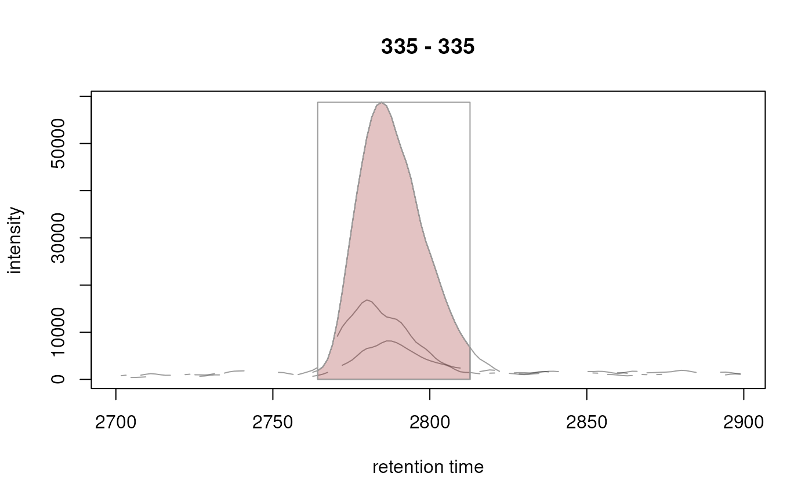

Add definition of chromatographic peaks to an extracted chromatogram plot
Source:R/functions-XCMSnExp.R
highlightChromPeaks.RdThe highlightChromPeaks() function adds chromatographic
peak definitions to an existing plot, such as one created by the
plot() method on a MSnbase::Chromatogram() or
MSnbase::MChromatograms() object.
Arguments
- x
For
highlightChromPeaks():XCMSnExpobject with the detected peaks.- rt
For
highlightChromPeaks():numeric(2)with the retention time range from which peaks should be extracted and plotted.- mz
numeric(2)with the mz range from which the peaks should be extracted and plotted.- peakIds
characterdefining the IDs (i.e. rownames of the peak in thechromPeakstable) of the chromatographic peaks to be highlighted in a plot.- border
colors to be used to color the border of the rectangles/peaks. Has to be equal to the number of samples in
x.- lwd
numeric(1)defining the width of the line/border.- col
For
highlightChromPeaks(): color to be used to fill the rectangle (iftype = "rect") or the peak (fortype = "polygon").- type
the plotting type. See
plot()in base grapics for more details. ForhighlightChromPeaks():character(1)defining how the peak should be highlighted:type = "rect"draws a rectangle representing the peak definition,type = "point"indicates a chromatographic peak with a single point at the position of the peak's"rt"and"maxo"andtype = "polygon"will highlight the peak shape. Fortype = "polygon"the color of the border and area can be defined with parameters"border"and"col", respectively.- whichPeaks
character(1)specifying how peaks are called to be located within the region defined bymzandrt. Can be one of"any","within", and"apex_within"for all peaks that are even partially overlapping the region, peaks that are completely within the region, and peaks for which the apex is within the region. This parameter is passed to thetypeargument of thechromPeaks()function. See related documentation for more information and examples.- ...
Examples
## Load a test data set with detected peaks
library(MSnbase)
data(faahko_sub)
## Update the path to the files for the local system
dirname(faahko_sub) <- system.file("cdf/KO", package = "faahKO")
## Disable parallel processing for this example
register(SerialParam())
## Extract the ion chromatogram for one chromatographic peak in the data.
chrs <- chromatogram(faahko_sub, rt = c(2700, 2900), mz = 335)
plot(chrs)
## Extract chromatographic peaks for the mz/rt range (if any).
chromPeaks(faahko_sub, rt = c(2700, 2900), mz = 335)
#> mz mzmin mzmax rt rtmin rtmax into intb maxo sn sample
#> CP095 335 335 335 2786.199 2764.29 2812.803 1496244 1451652 58736 55 2
## Highlight the chromatographic peaks in the area
## Show the peak definition with a rectangle
highlightChromPeaks(faahko_sub, rt = c(2700, 2900), mz = 335)
## Color the actual peak
highlightChromPeaks(faahko_sub, rt = c(2700, 2900), mz = 335,
col = c("#ff000020", "#00ff0020"), type = "polygon")
